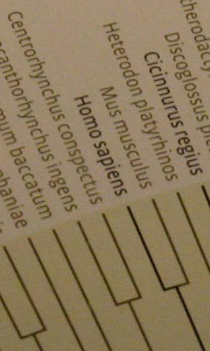

| Evolution in the News - September 2007 |
| by Do-While Jones |
Science Against Evolution takes no stand on animal rights. We merely note that just as racial views have influenced scientific "truth" in the past, animal rights implications now affect evolutionary conclusions.
Facts have implications. Sometimes those implications can backfire. For a long time evolutionists have been stressing the similarity of man to apes. They wanted to imply that humans are almost apes. The more similar they could make apes and humans appear, the more plausible the theory of evolution.
Evolutionists didn't realize that when they were implying that humans are almost apes, they were also implying that apes are almost human. The double-edged sword did not go unnoticed by animal rights activists, however.
|
Spare the apes. That's the message from the Members of the European Parliament in Strasbourg, France. Last week, 433 of 626 MEPs signed a declaration demanding an end to experiments on great apes and non-human primates in Europe. The declaration is not legally binding, but it is a barometer of opinion and must be formally taken into account by officials drawing up legislation in the European Commission (EC). "It sends an incredibly powerful message to the commission, who are currently reviewing rules for animal experiments across Europe," says Animal Defenders International, the London and San Francisco-based lobby group that championed the declaration. 1 |
The declaration signed by the Members of the European Parliament sets forth four reasons (A, B, C, and D) for prohibiting ending primate experiments. Please note reason C.
|
C. noting that primates have a high level of intelligence, being the closest relative to humans, with certain species such as chimpanzees sharing 98% of human DNA, 2 |
The problem for evolutionists is that the more scientific evidence there is that apes are almost human, the less scientists will be able to experiment on them.
You might wonder if that could explain the recent trend for scientists to downplay the similarity between apes and humans. If so, you are probably the kind of person who is skeptical of the research by scientists employed by the tobacco industry who say cigarette smoking isn't harmful. You might disregard research by scientists employed by the drug industry who say drugs don't have dangerous side effects. You might even doubt the research by scientists employed by the oil industry regarding global warming. Don't you realize that scientists are impartial, unbiased, and always tell the truth regardless of who pays them?
The European resolution cited two similarities between apes and humans--intelligence and DNA. This month an article in Time magazine tried to dance around the problem of the intelligence of apes. They reported that a recent study showed
|
[Chimps, orangutans, and children] performed about equally well on "physical learning" -- locating hidden objects, figuring out the source of a noise, understanding the concepts of more and less, using a stick to get something that's out of reach. 3 |
But, lest that make apes too human-like, they were quick to say
|
But when it came to "social learning" tasks -- such as understanding how to solve a problem by watching someone else do it, figuring out someone else's state of mind from their actions, or using nonverbal communication to explain or understand how to find something -- the kids made monkeys of the apes. 4 |
It is a tricky balancing act. Evolutionists have to convince us that apes have intelligence similar to humans to make ape to human evolution plausible, but they have to stress that apes have a different kind of intelligence to avoid the moral objections that animal rights activists might raise.
Evolutionists usually fiddle with the numbers to try to make ape DNA as close to human DNA as possible. Last month we reported that evolutionists are now saying that our DNA isn't that much like chimpanzee DNA. 5
Perhaps evolutionists will encourage animal rights activists to read the special Focus section in the 6 July 2007 issue of Science about the recently sequenced DNA of the sea anemone.
|
Moreover, the anemone genes look vertebratelike. They often are full of noncoding regions called introns, which are much less common in nematodes and fruit flies than in vertebrates. And more than 80% of the anemone introns are in the same places in humans, suggesting that they probably existed in the common ancestor. 6 |
The sea anemone DNA has an 80% similarity to human DNA, but the sea anemone certainly doesn't need to have its rights protected, does it?
Our feature article in this newsletter contained a quote which mentioned "the long evolutionary distance between humans and mice and rats." Ironically, one of our members recently sent us some pictures that he took at the American Museum of Natural History in New York, including one of their "tree of life." The museum web site also has a picture of the tree, along with this explanation.
What interested our member was man's place on the tree. The closest thing to Homo sapiens (modern humans) on this chart is Mus musculus (the mouse)! What point is the museum trying to get across by showing how closely related men are to mice? Remember, every museum display has a purpose. Why didn't they include chimps or gorillas on the tree? Here was a perfect chance to show how close humans are to apes, but they didn't take it. Do you wonder why? |
 |
Everybody has a point to make, and of course we do, too. Lest you misunderstand our point, let us spell it out as clearly as we can.
There are genetic similarities and differences in all living organisms. The amount of similarity or difference will depend upon what you measure and how you measure it.
One cannot determine from the amount of similarity how that similarity came to be. Similarity might be the result of a common ancestor, or it might be the result of a common designer. Terms such as "ultraconserved" are simply the result of an assumption of why things are similar.
| Quick links to | |
|---|---|
| Science Against Evolution Home Page |
Back issues of Disclosure (our newsletter) |
| Web Site of the Month |
Topical Index |
Footnotes:
1
New Scientist, 15 Sept. 2007, "Spare the apes", p 4., https://www.newscientist.com/article/mg19526213-700-end-great-ape-experiments-says-european-parliament/
2
http://www.europarl.europa.eu/sides/getDoc.do?pubRef=-//EP//NONSGML+WDECL+P6-DCL-2006-0064+0+DOC+WORD+V0//EN&language;=EN
3
Lemonick, Time, 6 September 2007, "Babies Vs. Chimps: Who's Smarter", http://www.time.com/time/health/article/0,8599,1659611,00.html
4
ibid.
5
Disclosure, August 2007, "Forget Everything"
6
Pennisi, Science, 6 July 2007, "GENOMICS: Sea Anemone Provides a New View of Animal Evolution", page 27, https://www.science.org/doi/10.1126/science.317.5834.27
7
https://www.amnh.org/exhibitions/permanent/human-origins/understanding-our-past/tree-of-life